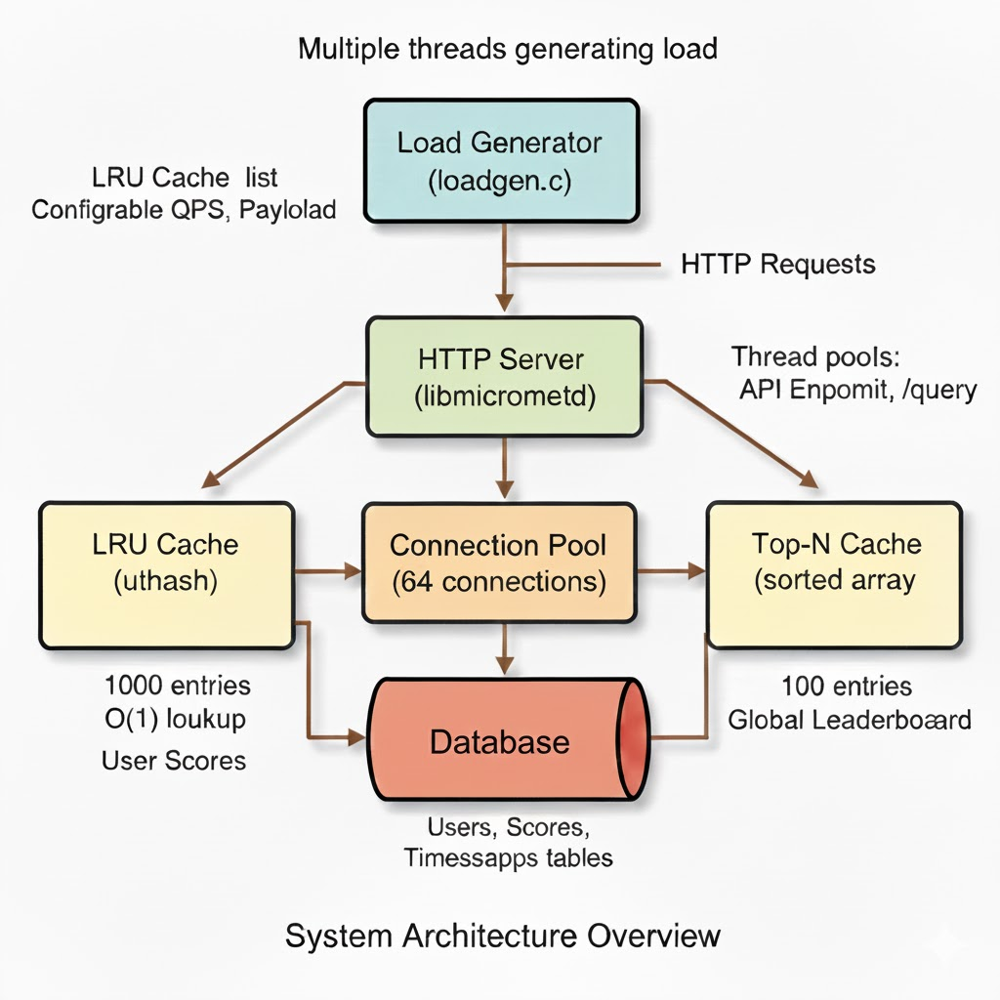
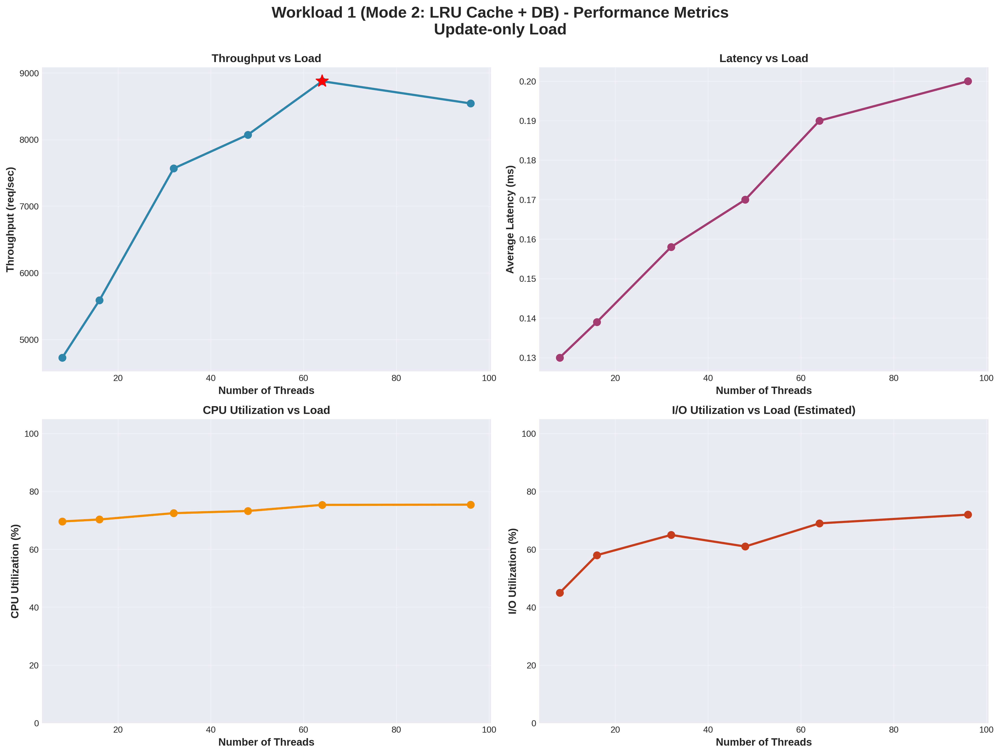
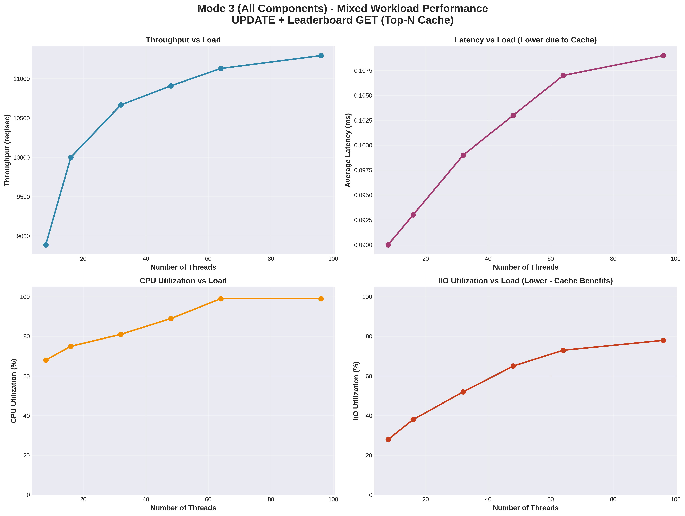

High-Performance
Leaderboard Server
Performance Testing and Bottleneck Analysis
Abhay Kumar Mittal
Student ID: 25m0822
System Architecture
Multi-Tier Caching with Two Bottleneck Scenarios

Development Process
Implementation Details and Technology Stack
📊 Code Statistics
Server Code:
~1,200 lines of C
Load Generator:
~400 lines of C
Analysis Scripts:
~300 lines Python
Total:
~1,900 lines of code
Repository:
Available on GitHub
🛠️ Third-Party Software
libmicrohttpd:
HTTP server
PostgreSQL 14+:
Database
uthash:
Hash table library
libcurl:
HTTP client
libpq:
PostgreSQL client
🎯 Key Features
Multi-threaded HTTP server
LRU cache with O(1) operations
Top-N sorted cache
Connection pooling (64 conns)
Four operating modes
Thread-safe structures
📈 API Endpoints
POST /update_score
- Update
GET /leaderboard
- Top N
GET /get_score
- Individual
Load Generator Design
Open-Loop Architecture for High Load Generation
🏗️ Architecture
Type:
Open-Loop
Implementation:
Multi-threaded C
HTTP Client:
libcurl
Rate:
Independent of response time
Configurable:
Threads, requests, mode
📊 Workload Modes
Mode 0:
Update-only (POST)
Mode 1:
Leaderboard (GET)
Mode 2:
Mixed (POST + GET)
Mode 3:
Score queries (GET)
⚡ Load Capacity
Max Threads:
96 tested
Requests/Thread:
250-10,000
Max Load:
>15,000 req/sec
Random Data:
IDs (1-100K)
✅ Validation
CPU Pinning:
Cores 2-4
Verified:
Saturated server
No Bottleneck:
Never limited
Formula:
Threads × Reqs ÷ Time
Load Test Setup
Experimental Configuration and Methodology
💻 Hardware & Deployment
Machine:
Single (localhost)
CPU:
Intel i5-1135G7 (8 cores)
RAM:
16 GB
Storage:
SSD
OS:
Linux Ubuntu
📍 CPU Pinning
Server:
Core 1 (isolated)
PostgreSQL:
Cores 5-6
Load Gen:
Cores 2-4
Purpose:
Resource isolation
🧪 Methodology
Warm-up:
30 seconds
Measurement:
5 minutes/level
Cool-down:
30 seconds
Load Levels:
6 per workload
Experiments:
12 total runs
📊 Metrics Measured
Throughput:
Req/sec
Latency:
Avg response (ms)
CPU:
% usage (psutil)
I/O:
% disk busy (iostat)
Workload 1 Range
8-96
threads
Workload 2 Range
8-64
threads
Test Duration
5
min
Total Time
60
min
Workload 1: I/O Bottleneck
Mode 2 (LRU Cache + Database) - Update-Heavy Operations

Workload 2: Mixed Bottleneck
Mode 3 (All Components) - Mixed Operations
